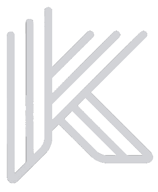

<section class="k-container">
    <nav class="navbar flex justify-between bg-transparent items-center py-12">
        <div class="navbar__logo">
            
        </div>
    
        <div class="navbar__items">
            <a class="navbar__item no-underline" (click)="checkForActiveClass($event)">About</a>
            <a class="navbar__item no-underline" (click)="checkForActiveClass($event)">Service</a>
            <a class="navbar__item no-underline" (click)="checkForActiveClass($event)" href="#projects">Project</a>
            <a class="navbar__item no-underline" (click)="checkForActiveClass($event)">Contact</a>
        </div>
    </nav>
</section>